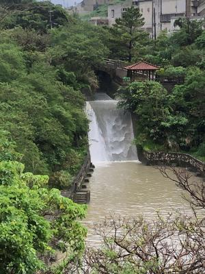
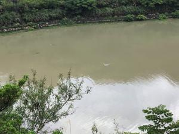
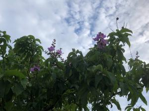

うるがいの話 ある日
最新: 落葉広葉樹の花が咲く【うるがいの話 ある日】とは 一日だけのプログです
『うるがいの話』の最新一日だけのプログで、通信料が少なく経済的だ。カニの画像をクリックすると全ての日付が載る『うるがいの話』サイトを表示します
|
|
【うるがいの話】 うるがい(ｳﾙｶﾞｲ urugai)とは、『もずくがに』の名前でとても大きくなります。 |
|---|---|
|
|
【カミマヤーの話】 猫のことを方言でマヤーといいます。カミマヤー（kamimayaa）とは、神の猫のことです。 |
|
【たながぁの音楽】 たながぁ（ﾀﾅｶﾞｰ tanagaa）とは手長えびのことで、何種類かあり大きいのは車 エビぐらいになります。 |

|
【ぶながぁの話】 ぶながぁ(ﾌﾞﾅｶﾞｰ bunagaa)とは、赤い髪の毛、赤い身体、そして身長は１ｍ２０ｃｍ ぐらい、川の蟹を食べているの目撃された。場所は沖縄県国頭郡大宜味村のと ある村僕の隣近所に住んでいる爺さんから、聞いた話です。 |
|
|
【ギーマの話】 ギーマ(giima)とは、山原の里山に咲くスズランに似た、 花を付けます。実は食べられます、 気が付くと口の周りが紫になっています。 |
2022年06月04日 (土）落葉広葉樹の花が咲く
16:07
 
雨が上がった時間帯を見計らってウォーキングへ行く。雨でかなり増水してい
た。金城ダムでは、水中の酸素が少なくなったのか魚が、水面で泳いでいるの
をかなり見かけた。そして、若葉だった落葉広葉樹は、雨の中花が咲いていた

任意継続被保険者証を返して下さい！と退職時の健康保険組合から特定記録（
赤印）の封筒がこの前届いた。え！、ん？、やはり返さないと行けなかったの
だ。ヨメに返せと言われていると話すと、捨てた！、捨てていいよと言われた
のでと怒っている。あ、多分そう言ったのだろう。３月末に届いた『任意継続
被保険者資格喪失通知』なるものに、速やかに返せと書いてある。また、ケア
レである。少し、落ち込む。私のは記念として置いていたが、ヨメのものは無
いので滅失届けなるものに次の理由を書いて、速やかに健康保険組合に送った
『令和４年４月４日に国民健康保険証を取得したあと、返却が必要とは思わず
ハサミでせん断したあと燃やすごみ収集で廃棄した。』、ところで特定記録と
はなんだと調べる。
書留で送付したいものの、コストが気になる方にも特定記録郵便はおすすめの
方法です。そこで、手紙やはがきを郵便局窓口で引受けた際に受領証を発行し
てもらうことで、確実に差し出したことを証明できるのが特定記録郵便です。
フムフム、簡易書留だと通常の郵便料金に３２０円を足すが、特定記録郵便の
場合は半額の１６０円で済むらしい。私は、郵便料金の８４円に４０４円をく
わえた４０４円の簡易書留で送った。今日は、雨が上がる隙間がなさそうであ
る。
１５時５６分 ビットコインの総資産 ￥１１、２４８↓